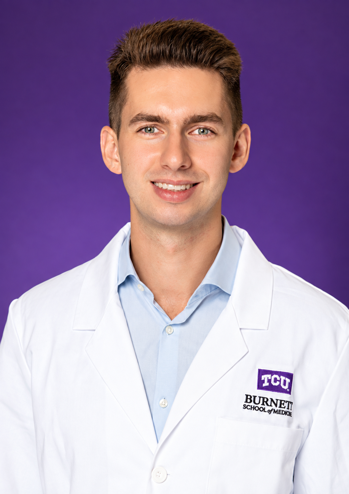

Supramolecular Motion & Neural Regeneration
NMR-based study of molecular motion and structure–function relationships in bioactive supramolecular scaffolds.
Publication ↗MEDICAL STUDENT
Exploring interventional radiology through image-guided therapy, clinical research, and procedural innovation.
01
ABOUT
I am a medical student at the Burnett School of Medicine at TCU with an interest in interventional radiology.
Before medical school, I studied neuroscience and chemistry at Northwestern University, where I conducted research in the Samuel I. Stupp Laboratory on supramolecular biomaterials engineered for neural regeneration.
My research has evolved from molecular and regenerative science toward the questions that draw me to interventional radiology: image-guided therapy, vascular disease, clinical outcomes, and procedural innovation. I am particularly interested in translating advances in minimally invasive treatment into meaningful improvements in patient care.
View curriculum vitae ↗
02
SELECTED WORK
NMR-based study of molecular motion and structure–function relationships in bioactive supramolecular scaffolds.
Publication ↗Design of supramolecular neuronal scaffolds integrating cell signaling and electrical conductivity.
Publication ↗Whether normal-range sodium variability predicts skilled nursing facility discharge after hip and knee arthroplasty.
Response-based strategies for treating calcified infrapopliteal disease in chronic limb-threatening ischemia.
CLTI · Educational research · ISETStudy in progress.
First-author researchStudy in progress.
First-author researchPUBLICATIONS & PRESENTATIONS
Selected scholarly workRadoslav Z. Pavlović, Yaroslav Vorobyov, et al.
Equal-contributing author · April 2026
Anna Metlushko, Nicholas A. Sather, Timmy Fyrner, Nozomu Takata, Yaroslav Vorobyov, et al.
Coauthor · March 2026
Omar Badr, Esha Shakthy, Yaroslav Vorobyov, David Shau
Coauthor · April 2026
Yaroslav Vorobyov, et al.
Submitted · 2026
Yaroslav Vorobyov, et al.
Coauthor · April 2025
03
EXPERIENCE
Doctor of Medicine
Interventional Radiology / Vascular Surgery
Emergency Medical Technician
Neuroscience & Chemistry
04
CONTACT
Research collaborations, academic opportunities, and professional connections are always welcome.